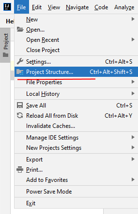
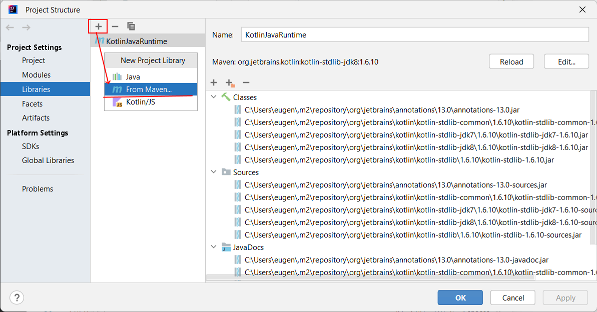
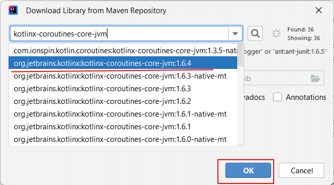
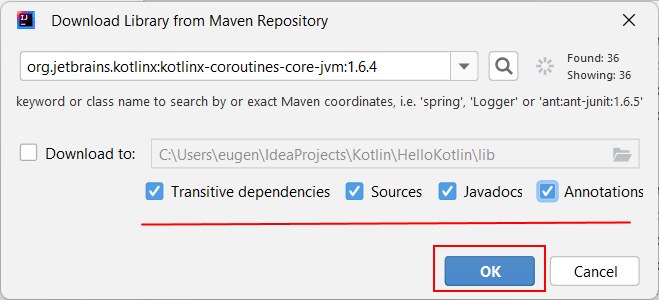
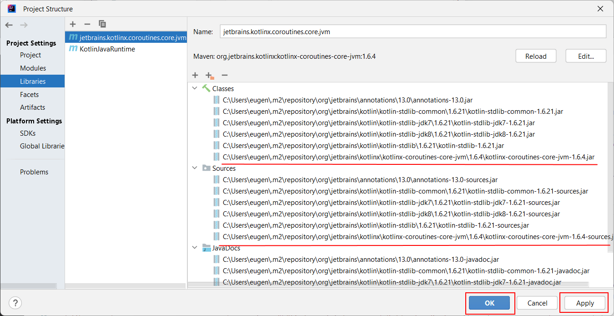
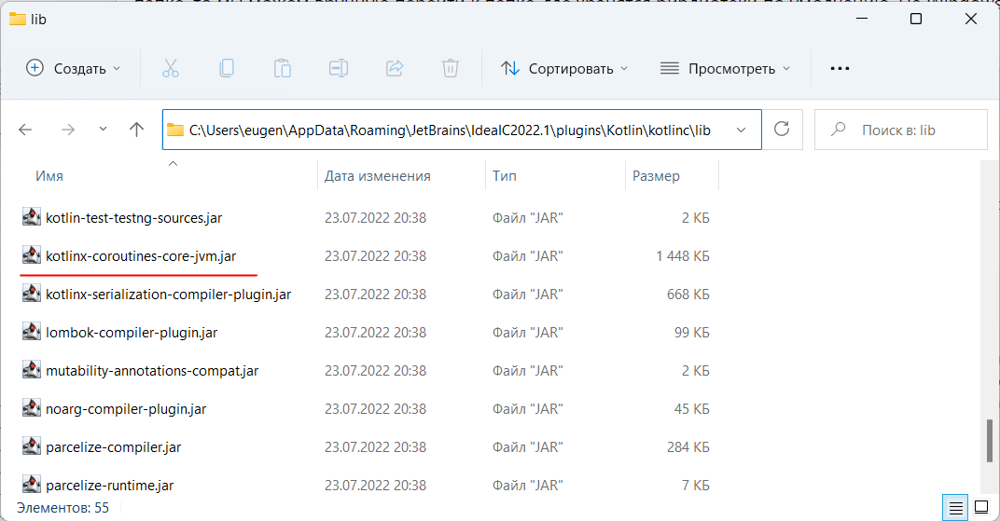

В последнее время поддержка асинхронности и параллельных вычислений стала неотъемлимой чертой многих языков программирования. И Kotlin не является исключением. Зачем нужны асинхронность и параллельные вычисления? Параллельные вычисления позволяют выполнять несколько задач одновременно, а асинхронность позволяет не блокировать основной ход приложения во время выполнения задачи, которая занимает продолжительное время. Например, мы создаем графическое приложение для десктопа или мобильного устройства. И нам надо по нажатию на кнопку отправлять запрос к интернет-ресурсу. Однако подобный запрос может занять продолжительное время. И чтобы приложение не зависало на период отправки запроса, подобные запросы к интернет-ресурсам следует отправлять асинхронно. При асинхронных запросах пользователь не ждет пока придет ответ от интернет-ресурса, а продолжает работу с приложением, а при получении ответа получит соответствующее уведомление.
В языке Kotlin поддержка асинхронности и параллельных вычислений воплощена в виде корутин (coroutine). По сути корутина представляет блок кода, который может выполняться параллельно с остальным кодом. А базовая функциональность, связанная с корутинами, сосредоточена в библиотеке kotlinx.coroutines.
Рассмотрим определение и применение корутины на простейшем примере.
Прежде всего стоит отметить, что функциональность корутин (библиотека kotlinx.coroutines) по умолчанию не включена в проект. И нам ее надо добавить. Если мы создаем проект консольного приложения в IntelliJ IDEA, то мы можем добавить соответствующую библиотеку в проект. Для этого в меню File перейдем к пункту Project Structure..
Далее на вкладке "Project Settings" перейдем к пункту Libraries. В центральном поле отобразятся библиотеки, добавленные в проект.
И для добавления новой библиотеки нажмем на знак плюса и в контекстном меню выберем пункт From Maven...
После этого нам откроется окно для добавления библиотеки через Maven. В этом окне в поле ввода введем название нужной нам библиотеки - kotlinx-coroutines-core-jvm и нажмем на кнопку поиска. Если соответствующая библиотека найдена, то нам отобразится выпадающий список с результатами
Выберем из него последнюю версию, которая называется наподобие org.jetbrains.kotlinx:kotlinx-coroutines-core-jvm:1.6.4 - в данном случае используется версия 1.6.4, но конкретный номер версии может отличаться.
Отметим все необходимые флажки и нажмем на кнопку OK
После установки библиотеки мы сможем найти ее файл в списке библиотек
В качестве альтернативы мы могли бы вручную подключить нужную библиотеку из локального хранилища. Так, на Windows это будет папка
C:\Users\[Имя_пользователя]\AppData\Roaming\JetBrains\IdeaIC[номер_версии]\plugins\Kotlin\kotlinc\lib
Далее в этой папке выберем библиотеку kotlinx-coroutines-core-jvm.jar и нажмем на OK для ее добавления:
Сначала рассмотрим пример, который не использует корутины:
1 2 3 4 5 6 7 8 9 10 | import kotlinx.coroutines.*suspend fun main(){ for(i in 0..5){ delay(400L) println(i) } println("Hello Coroutines")} |
Здесь в функции main перебираем последовательность от 0 до 5 и выводит текущий элемент последовательности на консоль. Для имитации продолжительной работы
внутри цикла вызываем специальную функцию delay() из пакета kotlinx.coroutines. В эту функцию передается количество миллисекунд, на
которое выполняется задержка. Передаваемое значение должно иметь тип Long. То есть здесь функция будет выполнять задержку в 400 миллисекунд перед выводом на
консоль текущего элемента последовательности.
После выполнения работы цикла выводим на консоль строку "Hello Coroutines".
И чтобы использовать внутри функции main функцию delay(), функция main предваряется модификатром suspend.
Модификатор suspend определяет функцию, которая может приостановить свое выполнение и возобновить его через некоторый период времени.
Сама функция delay() тоже является подобной функцией, которая определена с модификатором suspend. А любая функция с модификатором
suspend может вызываться либо из другой функции, которая тоже имеет модификатор suspend, либо из корутины.
Если мы запустим приложение, то мы увидим следующий консольный вывод:
0 1 2 3 4 5 Hello Coroutines
Здесь мы видим, что строка "Hello Coroutines" выводится после выполнения цикла. Но вместо цикла у нас могла бы быть более содержательная, но и более продолжительная работа, например, обращение к интернет-ресурсу, к удаленой базе данных, какие-то операции с файлами и т.д. И в этом случае все определенные после этой работы действия ожидали бы завершения этой продолжительной работы, как в данном случае строка "Hello Coroutines" ждет завершения цикла.
Теперь вынесем продолжительную работу - то есть цикл в корутину:
1 2 3 4 5 6 7 8 9 10 11 12 | import kotlinx.coroutines.*suspend fun main() = coroutineScope{ launch{ for(i in 0..5){ delay(400L) println(i) } } println("Hello Coroutines")} |
Прежде всего для определения и выполнения корутины нам надо определить для нее контекст, так как корутина может вызываться только в контексте корутины (coroutine scope). Для этого применяется функция coroutineScope() - создает контекст корутины. Кроме того, эта функция ожидает выполнения всех определенных внутри нее корутин. Стоит отметить, что coroutineScope() может применяться только в функции с модификатором suspend, коей является функция main.
Сама корутина определяется и запускается с помощью построителя корутин - функции launch. Она создает корутину в виде блока кода - в данном случае это:
1 2 3 4 5 6 | { for(i in 0..5){ delay(400L) println(i) }} |
и запускает эту корутину параллельно с остальным кодом. То есть данная корутина выполняется независимо от прочего кода, определенного в функции main.
В итоге при выполнении программы мы увидим несколько другой консольный вывод:
Hello Coroutines 0 1 2 3 4 5
Теперь строка "Hello Coroutines" не ожидает, пока завершится цикл, а выполняется параллельно с ним.
Выше код корутины располагался непосредственно в функции main. Но также можно определить его в виде отдельной функции и вызывать в корутине эту функцию:
1 2 3 4 5 6 7 8 9 10 11 12 13 | import kotlinx.coroutines.*suspend fun main()= coroutineScope{ launch{ doWork() } println("Hello Coroutines")}suspend fun doWork(){ for(i in 0..5){ println(i) delay(400L) }} |
В данном случае основной код корутины вынесен в функцию doWork(). Поскольку в этой функции применяется функция delay(), то doWork() определена с модификатором
suspend. Сама корутина создается также с помощью функции launch(), которая вызывает функцию doWork().
Обратите внимание, что в примере выше в конце функции main вызывается функция println(), которая выводит строку на консоль. Если мы ее удалим,
то мы столкнемся с ошибкой - функция main должна возвращать значение Unit. В этом случае мы можем либо явным образом возвратить значение Unit:
1 2 3 4 5 6 7 8 9 10 11 | import kotlinx.coroutines.*suspend fun main()= coroutineScope{ launch{ for(i in 0..5){ println(i) delay(400L) } } Unit} |
Либо можно типизировать функцию coroutineScope типом Unit:
1 2 3 4 5 6 7 8 9 10 | import kotlinx.coroutines.*suspend fun main()= coroutineScope<Unit>{ launch{ for(i in 0..5){ println(i) delay(400L) } }} |
В ряде языков программирования есть такие структуры, которые позволяют использовать потоки. Однако между корутинами и потоками нет прямого соответствия. Корутина не привязана к конкретному потоку. Она может быть приостановить выполнение в одном потоке, а возобновить выполнение в другом.
Когда корутина приостанавливает свое выполнение, например, как в случае выше при вызове задержки с помощью функции delay(),
эта корутина освобождает поток, в котором она выполнялась, и сохраняется в памяти.
А освобожденный поток может быть зайдествован для других задач. А когда завершается запущенная задача (например, выполнение функции delay()), корутина возобновляет свою работу
в одном из свободных потоков.